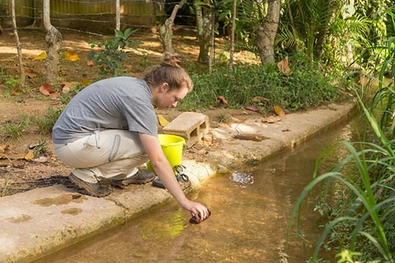

| Academic & Research Registries Evidence |

|

|

|
Urdaneta City University (UCU) has undertaken a wide range of education and research programs that contribute significantly to the achievement of the 17 Sustainable Development Goals (SDGs). These initiatives demonstrate a strong institutional commitment to sustainability integration across teaching, learning, innovation, and community engagement.
Key programs supporting this integration include:
- Curriculum Integration: Embedding sustainability themes across the curriculum in various disciplines, including environmental science, engineering, economics, public health, and social sciences.
- Interdisciplinary Programs: Development of interdisciplinary programs and courses focused on climate change, energy transition, circular economy, and sustainable development.
- Research Infrastructure: Establishment of dedicated research centers, labs, and think tanks addressing key sustainability challenges such as renewable energy, biodiversity, water management, and urban resilience.
- Scholarly Publications: Annual publication of sustainability-related research outputs, including peer-reviewed journals, books, policy briefs, and innovation patents.
- Funding Support: Provision of sustainability-focused scholarships, thesis grants, and funding support for student-led research and capstone projects.
- Community-Based Learning: Community-based learning and participatory action research in collaboration with local governments, industries, and NGOs to solve real-world environmental issues.
- Knowledge Exchange: Organization of conferences, workshops, and summer schools on SDG-related themes to foster knowledge exchange and interdisciplinary dialogue.
- Literacy Campaigns: Implementation of environmental literacy campaigns to raise awareness among students, staff, and the broader community.
- Campus Living Labs: Promotion of green campus living labs, where students and researchers co-develop and pilot sustainability innovations on campus.
- International Collaboration: Partnerships with international academic networks to scale up research collaborations and share best practices on education for sustainable development.
These efforts directly support SDGs 3, 4, 5, 6, 7, 9, 11, 12, 13, 15, and 17, and contribute indirectly to the remaining goals.
Education and Research Programs and SDG Alignment
SDG 3
Good Health and Well-being
Enhancing health and well-being through applied public health research.
SDG 4
Quality Education
Providing quality education that empowers learners for sustainability.
SDG 5
Gender Equality
Promoting gender equality through inclusive academic opportunities.
SDG 6
Clean Water and Sanitation
Advancing water research and infrastructure innovation.
SDG 7
Affordable and Clean Energy
Driving clean energy solutions through academic inquiry.
SDG 9
Industry, Innovation, and Infrastructure
Supporting innovation and sustainable industrialization.
SDG 11
Sustainable Cities and Communities
Enabling sustainable urban planning through applied research.
SDG 12
Responsible Consumption and Production
Encouraging responsible production and consumption patterns.
SDG 13
Climate Action
Promoting climate science and adaptation strategies.
SDG 15
Life on Land
Conserving ecosystems through environmental research.
SDG 17
Partnerships for the Goals
Building academic partnerships for global sustainable development.